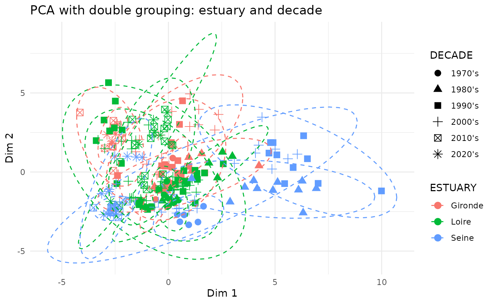

data_summarized <- data |>
mutate(YEAR = year(DATE)) |>
mutate(ESTUARY = as.factor(ESTUARY)) |>
group_by(ESTUARY, YEAR, PARAMETRE_LIBELLE, PROGRAMME) |>
summarise(RESULTAT = median(RESULTAT, na.rm = TRUE), .groups = "drop")
ggplot_data_summarized <- data_summarized |>
ggplot() +
aes(x = YEAR, y = RESULTAT, colour = ESTUARY) +
geom_line() +
facet_grid(rows = vars(PARAMETRE_LIBELLE), scales = "free_y")
ggplot_data_summarized
# ggsave(plot = ggplot_data_summarized, filename = "../inst/results/data_physico_chemistry/ggplot_yearly_summarized_physiochem_parameters.jpg",
# width = 10, height = 25, units = "cm")
data_summarized |>
group_by(ESTUARY, PARAMETRE_LIBELLE, PROGRAMME) |>
summarise(min_year = min(YEAR),
max_year = max(YEAR)) |>
arrange(PARAMETRE_LIBELLE)## `summarise()` has grouped output by 'ESTUARY', 'PARAMETRE_LIBELLE'. You can
## override using the `.groups` argument.## # A tibble: 137 × 5
## # Groups: ESTUARY, PARAMETRE_LIBELLE [45]
## ESTUARY PARAMETRE_LIBELLE PROGRAMME min_year max_year
## <fct> <chr> <chr> <dbl> <dbl>
## 1 Gironde Ammonium REPHY 2007 2024
## 2 Gironde Ammonium REPOMO 1997 2007
## 3 Gironde Ammonium RNOHYD 1974 2006
## 4 Loire Ammonium REPHY 2009 2024
## 5 Loire Ammonium REPOMO 1997 2016
## 6 Loire Ammonium RESLOC_44 1992 2012
## 7 Loire Ammonium RNOHYD 1975 2007
## 8 Seine Ammonium REPHY 2008 2011
## 9 Seine Ammonium REPHY;RHLN 2010 2024
## 10 Seine Ammonium REPOMO 2000 2009
## # ℹ 127 more rows
data_summarized_wide <- data_summarized |>
pivot_wider(names_from = PARAMETRE_LIBELLE, values_from = RESULTAT) |>
mutate(DECADE = case_when(
YEAR %in% c(1970:1979) ~ "1970's",
YEAR %in% c(1980:1989) ~ "1980's",
YEAR %in% c(1990:1999) ~ "1990's",
YEAR %in% c(2000:2009) ~ "2000's",
YEAR %in% c(2010:2019) ~ "2010's",
YEAR %in% c(2020:2029) ~ "2020's",
))
# Get only numerical values for PCA
data_summarized_wide_num <- data_summarized_wide[, sapply(data_summarized_wide, is.numeric)]
group_var_1 <- data_summarized_wide$ESTUARY
group_var_2 <- data_summarized_wide$DECADE |> as.factor()
# Estimating the number of optimal components
nb_comp <- estim_ncpPCA(data_summarized_wide_num, method = "Regularized")$ncp
# Mixed NA allocation with the right number of components
df_num_imp <- imputePCA(data_summarized_wide_num, ncp = nb_comp)
# Compute PCA
res_pca <- FactoMineR::PCA(df_num_imp$completeObs,
scale.unit = TRUE,
graph = TRUE)
# Variables graph
pca_physicochemistry_var <- fviz_pca_var(
res_pca,
col.var = "contrib",
# couleur = contribution à l'axe
gradient.cols = c("#00AFBB", "#E7B800", "#FC4E07"),
repel = TRUE,
title = "PCA variables"
)
pca_physicochemistry_var
# ggsave(plot = pca_physicochemistry_var, filename = "../inst/results/data_physico_chemistry/PCA/ggplot_PCA_variables.jpg",
# width = 20, height = 20, units = "cm")
# Individual ESTUARY graph
pca_physicochemistry_ind_ESTUARY <- fviz_pca_ind(
res_pca,
habillage = group_var_1,
palette = "jco",
addEllipses = TRUE,
ellipse.type = "confidence",
title = "PCA individuals by estuary"
)
pca_physicochemistry_ind_ESTUARY
# ggsave(plot = pca_physicochemistry_ind_ESTUARY, filename = "../inst/results/data_physico_chemistry/PCA/ggplot_PCA_ind_estuary.jpg",
# width = 20, height = 20, units = "cm")
# Individual DECADE graph
pca_physicochemistry_ind_DECADE <- fviz_pca_ind(
res_pca,
habillage = group_var_2,
palette = "jco",
addEllipses = TRUE,
ellipse.type = "confidence",
title = "PCA individuals by decade"
)
pca_physicochemistry_ind_DECADE
# ggsave(plot = pca_physicochemistry_ind_DECADE, filename = "../inst/results/data_physico_chemistry/PCA/ggplot_PCA_ind_decade.jpg",
# width = 20, height = 20, units = "cm")
# Individual ESTUARY & DECADE graph
df_res_pca <- as.data.frame(res_pca$ind$coord)
df_res_pca$ESTUARY <- group_var_1
df_res_pca$DECADE <- group_var_2
pca_physicochemistry_ind_ESTUARY_DECADE <- ggplot(df_res_pca, aes(x = Dim.1, y = Dim.2, color = ESTUARY, shape = DECADE)) +
geom_point(size = 3) +
stat_ellipse(aes(group = interaction(ESTUARY, DECADE)), type = "norm", linetype = 2) +
theme_minimal() +
labs(title = "PCA with double grouping: estuary and decade", x = "Dim 1", y = "Dim 2")
pca_physicochemistry_ind_ESTUARY_DECADE
# ggsave(plot = pca_physicochemistry_ind_ESTUARY_DECADE, filename = "../inst/results/data_physico_chemistry/PCA/ggplot_PCA_ind_estuary_decade.jpg",
# width = 20, height = 20, units = "cm")Compute the sum of nitrite + nitrate
data_summarized_N0 <- data_summarized |>
pivot_wider(names_from = PARAMETRE_LIBELLE, values_from = RESULTAT) |>
mutate(sumNO2NO3 = `Azote nitreux (nitrite)` + `Azote nitrique (nitrate)`) |>
pivot_longer(cols = -c(ESTUARY, YEAR, PROGRAMME),
names_to = "PARAMETRE_LIBELLE", values_to = "RESULTAT")Compare the computed sum levels with existing sum
data_N0sum_comparison <- data_summarized_N0 |>
filter(PARAMETRE_LIBELLE %in% c("sumNO2NO3", "Nitrate + nitrite"))
ggplot_N0sum_comparison <- ggplot(data_N0sum_comparison) +
aes(x = YEAR, y = RESULTAT, colour = PARAMETRE_LIBELLE) +
geom_line() +
facet_grid(rows = vars(ESTUARY))
ggplot_N0sum_comparison## Warning: Removed 44 rows containing missing values or values outside the scale range
## (`geom_line()`).
# ggsave(plot = ggplot_N0sum_comparison, filename = "../inst/results/data_physico_chemistry/ggplot_nitrogen_sum_comparison.jpg",width = 15, height = 10, units = "cm")
data_nitrogen_cycle <- data_summarized_N0 |>
pivot_wider(names_from = PARAMETRE_LIBELLE, values_from = RESULTAT) |>
group_by(ESTUARY, YEAR) |>
mutate(max_NO2NO3 = max(sumNO2NO3, `Nitrate + nitrite`, na.rm = TRUE)) |>
ungroup() |>
mutate(nitrogen_indicator = Ammonium / max_NO2NO3) |>
pivot_longer(cols = -c(ESTUARY, YEAR, PROGRAMME),
names_to = "PARAMETRE_LIBELLE", values_to = "RESULTAT")## Warning: There were 2 warnings in `mutate()`.
## The first warning was:
## ℹ In argument: `max_NO2NO3 = max(sumNO2NO3, `Nitrate + nitrite`, na.rm =
## TRUE)`.
## ℹ In group 20: `ESTUARY = Gironde` `YEAR = 1993`.
## Caused by warning in `max()`:
## ! no non-missing arguments to max; returning -Inf
## ℹ Run `dplyr::last_dplyr_warnings()` to see the 1 remaining warning.
data_N_indicator <- data_nitrogen_cycle |>
filter(PARAMETRE_LIBELLE == "nitrogen_indicator")
ggplot_data_N_indicator <- ggplot(data_N_indicator) +
aes(x = YEAR, y = RESULTAT, colour = ESTUARY) +
geom_line()
ggplot_data_N_indicator## Warning: Removed 3 rows containing missing values or values outside the scale range
## (`geom_line()`).
# ggsave(plot = ggplot_data_N_indicator, filename = "../inst/results/data_physico_chemistry/ggplot_nitrogen_cycle_indicator.jpg",width = 15, height = 10, units = "cm")Compute pheopigment/chlorophyl
data_summarized_p1 <- data_summarized |>
pivot_wider(names_from = PARAMETRE_LIBELLE, values_from = RESULTAT) |>
mutate(p1_indicator = Phéopigments / `Chlorophylle a`) |>
pivot_longer(cols = -c(ESTUARY, YEAR, PROGRAMME),
names_to = "PARAMETRE_LIBELLE", values_to = "RESULTAT")
data_p1 <- data_summarized_p1 |>
filter(PARAMETRE_LIBELLE == "p1_indicator")
ggplot_data_p1 <- ggplot(data_p1) +
aes(x = YEAR, y = RESULTAT, colour = ESTUARY) +
geom_line()
ggplot_data_p1## Warning: Removed 44 rows containing missing values or values outside the scale range
## (`geom_line()`).
# ggsave(plot = ggplot_data_p1, filename = "../inst/results/data_physico_chemistry/ggplot_primary_prod.jpg",width = 15, height = 10, units = "cm")